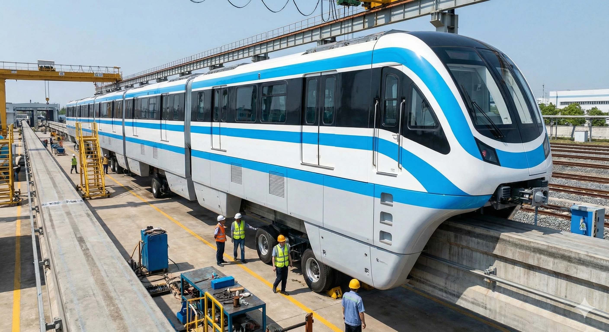
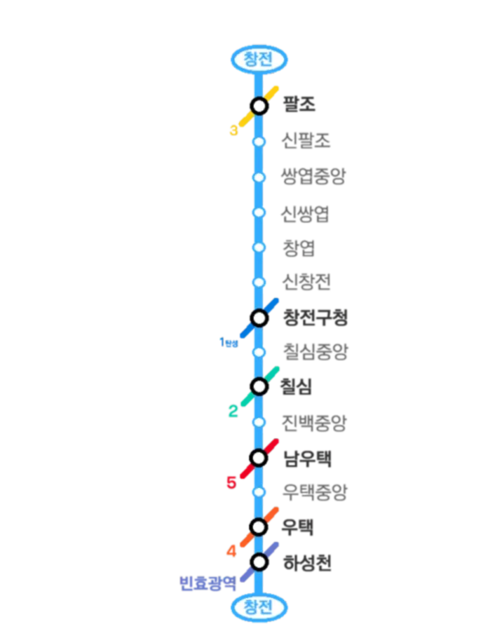

|
|||
|
 효빈교통공사 C000호대 전동차 (조감도)

창전선 공식 마스코트 심세이 래핑 열차
(보안 유지 중인 유출 이미지)  노선도
|
|||
| 노선 정보 | |||
|---|---|---|---|
| 노선 색상 | ■ 하늘색 (Vivid Sky Blue) | ||
| 운영 기관 | 효빈교통공사 | ||
| 개통일 |
1단계 (팔조~하성천) 2027년 예정 2단계 (덕현중앙~시청) 3단계 (청능, 고송강변~토모리) |
||
| 기점 | 팔조역 | ||
| 종점 | 토모리해수욕장역 | ||
| 역 수 | 26개 | ||
| 거리 | 27.85km | ||
| 시스템 | 과좌식 모노레일 | ||
| 차량 | C000호대 전동차 | ||
| 차량기지 | 창전차량사업소 | ||

1. 개요
"효빈의 하늘과 바다를 잇는 푸른 모노레일"
효빈교통공사가 건설 중인 도심 항공 궤도 노선이다. 노선 기호는 C, 노선 색상은 청량하고 우아한 느낌의 하늘색(Vivid Sky Blue, #33aaff)이다.
효빈시 외곽의 주거 밀집 지역이자 최고의 부촌인 창전구와 청엽구를 거쳐, 도심의 철도 심장부인 효빈역과 시청을 연결하고, 최종적으로는 바다가 펼쳐진 토모리 해수욕장까지 시원하게 이어지는 관광 겸 통근 노선이다. 종점인 토모리 해수욕장의 에메랄드빛 바다색을 따와 노선 컬러가 정해졌다는 공식 설정이 있으나, 주민들 사이에서는 전철 없이 콩나물 버스로 버티던 창전구민들의 피눈물이 모여 맑아진 색이라 카더라라는 슬픈 전설이 돈다.
효빈 도시철도 역사상 처음으로 모노레일(과좌식) 시스템을 전격 채택했다. 전 구간이 지상 2층(고가) 높이로 건설되어 있어 효빈의 아름다운 스카이라인과 해안 경관을 감상하기 완벽하며, 경전철 규격임에도 급행 열차를 운행하여 표정속도를 획기적으로 끌어올린 것이 가장 큰 강점이다.
2. 역사 및 건설 배경
2.1. 교통 소외지역의 눈물과 모노레일 채택
창전구는 효빈시 내 최고의 소득 수준을 자랑하는 '창전 리버럴' 부촌임에도 불구하고, 구내 철도 교통망의 빈부격차가 극심했다. 젊은 층이 많이 사는 동곡동 일대는 2호선과 3호선이 지나가 교통이 편리했으나, 정작 구의 심장부인 창전동, 쌍엽동, 칠심동 일대의 철도망은 처참한 수준(안습)이었다. 기껏해야 1호선 탄성지선이 끄트머리만 살짝 핥고 지나가는 수준이라, 이 동네 주민들은 비싼 외제차를 집에 모셔두고 만원 버스에 짐짝처럼 구겨져 타구의 환승역까지 끌려가는 굴욕적인 출근길을 감수해야 했다.
이러한 창전구와 청엽구의 고질적이고 눈물겨운 대중교통 갈증을 단번에 해소하기 위해 기획된 것이 바로 창전선이다. 좁은 도로 사정과 막대한 지하 굴착 비용 문제를 동시에 해결하기 위해 우아하고 친환경적인 '고가 모노레일' 방식이 채택되었으며, 2027년 1단계(팔조~하성천) 개통을 목표로 현재 맹렬히 교각을 세우고 있다.
2.2. 유초애 가문의 부활과 창전선 통신제어 사업
창전선은 노선 건설 외적으로도 효빈시의 어두운 과거를 청산한 상징적인 프로젝트다. 과거 2006년, 최악의 시장 윤대환의 '5호선 백지화 횡포'로 인해 5호선 하청을 맡았던 통신 및 신호 제어 업체가 파산하며 한 가문이 몰락하는 비극이 있었다. 그 피해자가 바로 훗날 효빈대학교 성악과 수석이자 지아센 5인방의 맏언니로 활약하는 유초애의 가문이었다.
하지만 2022년 창전선 개통 계획이 본격적으로 궤도에 오르면서, 박효빈 시장이 과거 시청의 행정 참사를 공식 사과하고 배상함과 동시에 유초애 아버지의 탁월한 모노레일 통신 제어 기술력을 인정하였다. 결국 유초애 가문의 회사가 '창전선 모노레일 통신 제어 및 역사 토목 사업'의 핵심 사업자로 당당히 선정되며 극적으로 부활에 성공했다.
당시 윤대환의 아들 윤재훈 일당이 이를 두고 "박효빈 시장이 자기 멘티(유초애) 집안에 수백억 대 특혜를 줬다!"라며 억지를 부렸으나, 유초애 본인이 직접 기자실 라이브 방송에 등판해 타사 대비 30% 압도적으로 뛰어난 기술 평가서 데이터와 윤대환의 조작 판결문을 들이밀며 완벽한 논리로 그들의 혓바닥을 잘라버린 일화는 레전드로 남아있다.
3. 운행 형태
- 완행: 전 구간(26개 역)의 모든 역에 정차하며 창전구 내부 수요를 촘촘히 훑는다.
- 급행: 모노레일로서는 세계적으로도 드물게 역에 대피선을 완벽히 갖추고 급행 운전을 실시한다.
4. 역 목록
급행: ● 정차 / ｜ 무정차 통과
환승 (주요 환승 노선):
 1호선
1호선
 2호선
2호선
 3호선
3호선 4호선
4호선
 5호선
5호선
 6호선
6호선 7호선
7호선
 빈효선 광역전철
빈효선 광역전철
| 단계 | 역번호 | 역명 | 한자 역명 | 거리 | 급행 | 접속 노선 | 승강장 | 횡단 | 소재지 |
|---|---|---|---|---|---|---|---|---|---|
단 계 |
|
||||||||
| (탄성지선) |
|||||||||
|
|||||||||
|
|||||||||
|
|||||||||
|
|||||||||
단 계 |
(예정) |
||||||||
| |
|||||||||
단 계 |
|
||||||||
단 계 |
|
||||||||
|
|||||||||
단 계 |
|
(고송동) |
|||||||
단 계 |
|
||||||||
단 계 |
|||||||||
|
5. 환경 및 특징
- 눈물겨운 개통 대기: 철도 인프라에 굶주릴 대로 굶주린 창전구민들의 창전선 사랑은 유별나다. 공사 현장에 세워진 교각 기둥만 봐도 가슴이 웅장해진다는 반응은 예사고, 일부 주민들은 아예 공사 진행률을 소수점 단위로 외우고 다니며 모형 모노레일을 모셔두고 개통 기원제를 지낸다는 소문마저 돈다.
- 성지순례 특화 노선: 노선이 창전구를 길게 관통하다 보니, 자연스럽게 창전구에 몰려있는 Morfonica(모르포니카) 관련 오타쿠 성지들을 완벽하게 잇는 핵심 노선이 될 전망이다. 개통 시 덕후들의 효빈 투어 필수 코스로 자리 잡을 가능성이 농후하다.
- 주요 환승 거점 (효빈역): 효빈시 최대의 환승역인 효빈역으로 꽂힌다. 창전선을 포함해 무려 5개 노선이 만나는 메가 환승 요지다.
- 강력한 빈효선 연계: 하성천역 ~ 전덕역 구간은 무려 3개 역 연속으로 빈효선 광역전철과 병주하며 환승이 가능한 황금 라인업을 구성한다.
6. 여담 및 마스코트
6.1. 윤재훈 추종자의 한자 무지 테러 사건
2025년, 일본 오다이바 테러까지 저지른 윤재훈 추종자가 창전(倉田)이라는 한자를 뱅드림 캐릭터 '쿠라타(마시로)'의 일본식 성씨로 착각하여 창전역에 락카 테러를 시도했던 희대의 촌극 사건이 터졌다. 이 여파로 창전선의 구체적인 역명(신창전, 창엽, 창전구청 등)이 발표되자 지역 사회에서는 "또 한자 못 읽고 마시로 성지인 줄 알고 락카 칠하러 오는 멍청한 놈들 생기는 거 아니냐"는 진심 어린 우려가 나오기도 했다. 다시 말하지만 창전(倉田)은 곡물 창고가 있던 밭이라는 역사 깊은 뜻이다.
6.2. 공식 마스코트 (심세이)
효빈교통공사가 창전선 개통을 앞두고 야심 차게 공개한 공식 마스코트 캐릭터다. 평소엔 우아한 스페인계 혼혈 영애를 연기하지만, 모노레일이 덜컹거리면 양팔을 꺾고 '구소쿠무시(심해 등각류) 댄스'를 추는 기괴한 갭 모에로 데뷔 전부터 효빈위키 팬덤을 장악했다.
- 디자인 수정의 기적 (웨이브 떡상): 초기 생머리 디자인이 미나토 유키나와 너무 닮아 수정하는 과정에서 웨이브가 대거 추가되어 '존예 비주얼'로 떡상했다.
- 1호선 하청 스파이 논란: 일러스트레이터가 블레이저 색상을 창전선 하늘색(#33aaff)이 아닌 1호선 파란색(#0077DD)으로 잘못 스포이드를 찍는 대참사가 발생했다. 데뷔하자마자 팬들에게 "1호선 고나미의 하청 스파이다"라고 신나게 놀림을 받았다.[1]
- 진상 참교육: 창전선 역사 내에 악성 민원인이 등장하면, 유창한 스페인어로 속사포 팩폭과 욕설(?)을 쏟아낸다.[2]
- 구소쿠무시 댄스와 짭라멩코: 놀라거나 뇌 정지가 오면 추는 정체불명의 등각류 댄스. 본인은 얼굴이 새빨개져서 "스페인 전통 플라멩코의 현대적 변형이다"라고 뻔뻔하게 우긴다.[3]